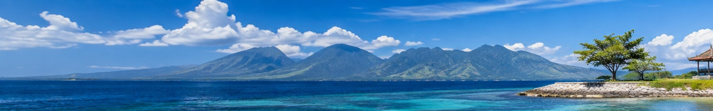
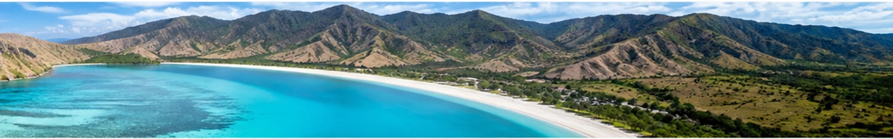
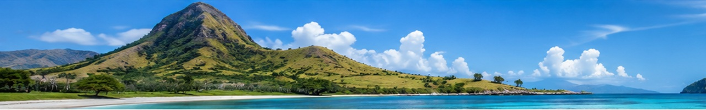

Lombok sering disebut sebagai "Bali 30 tahun yang lalu" — masih alami, masih tenang, tapi sama sekali tidak kalah cantik. Pulau ini menawarkan pengalaman yang lebih autentik dan less crowded dibandingkan tetangganya.
Kepulauan Gili (Gili Trawangan, Gili Meno, dan Gili Air) adalah surga kecil di sebelah barat Lombok. Tidak ada kendaraan bermotor di pulau-pulau ini — hanya sepeda, cidomo (delman), dan berjalan kaki. Air lautnya begitu jernih sehingga penyu bisa dilihat hanya dengan snorkeling dari pantai.
Bagi petualang, Gunung Rinjani (3.726 mdpl) menawarkan trekking 2-3 hari yang menakjubkan dengan danau kawah Segara Anak di puncaknya. Sementara pantai-pantai di selatan Lombok seperti Kuta Lombok dan Tanjung Aan memiliki pasir putih seperti merica yang unik.